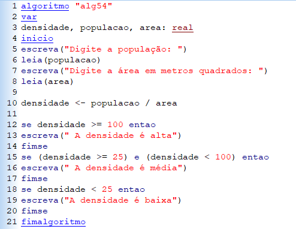

Aqui temos o algoritmo 54, originalmente feito no programa "VisuAlg"
"Criar um programa para calcular a densidade demográfica (habitantes por quilômetro quadrado) de uma região. Sendo, densidade igual a população (total de habitantes) dividida pela área (metros quadrados).
Mostrar mensagens para densidade alta (maior ou igual a 100), média (entre 25 e 100), baixa (menor que 25)."
Abaixo temos como a versão do VisuAlg do código funciona
O pseudocódigo começa lendo a área e a população que o usuário insere, logo calcula a densidade.
Ápos a etapa inicial, o resultado irá informar se a densidade é: alta, média ou baixa, na demonstração ela é média